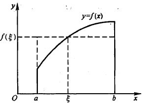

5. 定积分¶
5.1. 定积分的概念与性质¶
5.1.1. 背景¶
曲边梯形的面积¶
在区间 \([a, b]\) 上取 \(n-1\) 分为 \(n\) 块
其中各个小区间的长度为 \(\Delta{x_i} = x_i - xi_1\)
在各个区间上任取 \(\xi_i\), 作为区间的高, 得到以 \([x_{i-1}, x_i]\) 为底, \(f(\xi)\) 为高的矩形; 以所有这样的矩形的面积和作为曲边梯形的面积的近似值
曲边梯形的面积 \(A \approx \sum_{i=1}^n{f(\xi_i)\Delta{x_i}}\)
使所有区间的长度的最大值 \(\lambda = \max{|\Delta{x_1}, \Delta{x_2}, ..., \Delta{x_n}|}\) 趋近于 0, 则
\(A = \lim_{\lambda \to 0}\sum_{i=1}^n{f(\xi_i)\Delta{x_i}}\)
5.1.2. 定积分的定义¶
即 \(\int_a^b{f(x)} dx \approx \lim_{\lambda \to 0}\sum_{i=1}^n{f(\xi_i)\Delta{x_i}}\)
Note
\(f(x)\) 在 \([a, b]\) 上连续, 则 \(f(x)\) 在 \([a, b]\) 上可积
\(f(x)\) 在 \([a, b]\) 上有界, 且只有有限个间断点, 则 \(f(x)\) 在 \([a, b]\) 上可积
设 \(f(x)\) 在 \([0, 1]\) 上可积, 则 \(\int_0^1{f(x)} dx = \lim_{\lambda \to 0}\sum_{i=1}^n{f(\xi_i)\Delta{x_i}}\)
将 \([0, 1]\) 分为 \([0, 1] = [0, \frac{1}{n}] \cup [\frac{1}{n}, \frac{2}{n}] \cup ... \cup [\frac{n-1}{n}, \frac{n}{n}]\), 则
\(\Delta{x_i} = \frac{1}{n} = \lambda\), 且 \(n \to 0 \Leftrightarrow \lambda \to \infty\)
令 \(\xi_1 = \frac{1}{n}\), \(\xi_2 = \frac{2}{n}\), … \(\xi_i = \frac{i}{n}\), … \(\xi_n = \frac{n}{n}\), 替换可得
\(\lim_{n \to \infty} \frac{1}{n} \sum_{i=1}^n f(\frac{i}{n}) = \int_0^1{f(x)} dx\)
5.1.3. 定积分的一般性质¶
\(\int_a^b [f(x) \pm g(x)] dx = \int_a^b f(x) dx \pm \int_a^b g(x) dx\)
\(\int_a^b kf(x) dx = k \int_a^b f(x) dx\)
\(\int_a^b f(x) dx = -\int_b^a f(x) dx\)
\(\int_a^b f(x) dx = \int_a^c f(x) dx + \int_b^c f(x) dx\) (\(c\) 不一定在 \([a, b]\) 内)
\(\int_a^b 1 dx = b - a\)
① \(f(x) \geqslant 0 \quad (x \in [a, b])\), 则 \(\int_a^b f(x) dx \geqslant 0\)
② \(f(x) \geqslant g(x) \quad (x \in [a, b])\), 则 \(\int_a^b f(x) dx \geqslant \int_a^b g(x) dx\)
☆③ \(f(x), |f(x)|\) 在 \([a, b]\) 上可积, 则 \(|\int_a^b f(x) dx| \leqslant \int_a^b |f(x)| dx\)
积分中值定理
\(f(x) \in c[a, b]\), 则 \(\exists \xi \in [a, b]\), 使 \(\int_a^b f(x) dx = f(\xi)(b-a)\)
\(f(\xi)\) 称为 平均高度

5.2. 定积分基本公式¶
5.2.1. 积分上限函数¶
Note
\(f(x)\) 连续, \(g(x)\) 可导, 则 \(\frac{d}{dx} \int_a^{g(x)} f(t) dt \stackrel{g(x) = u}{=\mathrel{\mkern-3mu}=\mathrel{\mkern-3mu}=} \frac{d}{dx}\int_a^u f(t) dt = f[g(x)]g'(x)\)
\(f(x)\) 连续, \(g_1(x), g_2(x)\) 可导, 则 \(\frac{d}{dx} \int_{g_1(x)}^{g_2(x)} f(t) dt \\ = \frac{d}{dx}(\int_{g_1(x)}^0 f(t) dt + \int_0^{g_2(x)} f(t) dt) = \frac{d}{dx}(\int_0^{g_2(x)} f(t) dt - \int_0^{g_1(x)} f(t) dt) \\ = f[g_2(x)]g_2'(x) - f[g_1(x)]g_1'(x)\)
对 \(\int_a^{g(x)} f(x, t) dt\) 求导时, 若表达式中有 \(x\), 则先处理 \(x\)
例
\(\frac{d}{dx} \int_0^x x \sin{t^2} dt = ?\)
将 \(\int_0^x x \sin{t^2} dt = x \int_0^x \sin{t^2} dt\) 代入可得
\(\frac{d}{dx} \int_0^x x \sin{t^2} dt = \int_0^x \sin{t^2} dt + x \sin{x^2}\)
5.2.2. 牛顿-莱布尼茨公式¶
证明
令 \(\Phi(x) = \int_a^x f(t) dt\)
\(\because F'(x) = f(x), \Phi'(x) = f(x)\)
\(\therefore \Phi(x) - F(x) = C_0\)
则 \(\begin{cases} \Phi(a) - F(a) = C_0 \\ \Phi(b) - F(b) = C_0 \end{cases}\)
\(\Rightarrow \Phi(b) - F(b) = \Phi(a) - F(a)\)
\(\because \Phi(a) = 0, \therefore \Phi(b) = F(b) - F(a)\)
即 \(\int_a^b f(t) dt = F(b) - F(a)\), 也可写成 \(\int_a^b f(t) dt = F(x) |_a^b\)
5.3. 定积分的积分法¶
5.3.1. 换元积分法¶
5.3.2. 定积分的特殊性质¶
对称区间定积分性质¶
\(f(x) \in c[-a, a]\), 则 \(\int_{-a}^a f(x) dx = \int_0^a [f(x) + f(-x)] dx\)
- 特殊情况
① 若 \(f(-x) = -f(x)\), 则 \(\int_{-a}^a f(x) fx = 0\)
② 若 \(f(-x) = f(x)\), 则 \(\int_{-a}^a f(x) fx = 2\int_0^a f(x) fx\)
三角函数定积分性质¶
① 若 \(f(x) \in c[0, 1]\), 则 \(\int_0^{\frac{\pi}{2}} f(\sin{x}) dx = \int_0^{\frac{\pi}{2}} f(\cos{x}) dx\)
- 特殊情况
\(\int_0^{\frac{\pi}{2}} \sin^n{x} dx = \int_0^{\frac{\pi}{2}} \cos^n{x} dx\)
令 \(I_n = \int_0^{\frac{\pi}{2}} \cos^n{x} dx \\ = \int_0^{\frac{\pi}{2}} \cos^{n-1}{x} d(\sin{x}) \\ = \cos^{n-1}{x}\sin{x}|_0^{\frac{\pi}{2}} - \int_0^{\frac{\pi}{2}} \sin{x} d(\cos^{n-1}{x}) \\ = (n-1) \int_0^{\frac{\pi}{2}} \cos^{n-2}{x}\sin^2{x} dx \\ = (n-1)\int_0^{\frac{\pi}{2}} \cos^{n-2}{x} (1-\cos^2{x}) dx \\ = (n-1)I_{n-2} - (n-1)I_n\)
即 \(\begin{cases} I_n = \frac{n-1}{n}I_{n-2} \\ I_0 = \frac{\pi}{2} \\ I_1 = 1 \end{cases}\)
例
\(\int_0^{\frac{\pi}{2}} \cos^8{x} dx = I_8 = \frac{7}{8}I_6 = \frac{7}{8}\frac{5}{6}\frac{3}{4}\frac{1}{2}I_0 = \frac{7!!}{8!!}\frac{\pi}{2}\)
② \(\int_0^{\pi} f(\sin{x}) dx = 2\int_0^{\frac{\pi}{2}} f(\sin{x}) dx\)
- 特殊情况
\(\int_0^{\frac{\pi}{2}} \sin^n{x} dx = 2I_n\)
\(\int_0^{\frac{\pi}{2}} \cos^n{x} dx = \begin{cases} 0, \quad n\text{为奇数} \\ 2I_n, \quad n\text{为偶数} \end{cases}\)
③ \(\int_0^{\pi} xf(\sin{x}) dx = \frac{\pi}{2} \int_0^{\pi} \sin{x} dx\)
周期函数定积分性质¶
设 \(f(x)\) 是周期为 \(T\) 的可积函数, 则
① \(\int_a^{a+T} f(x) dx = \int_0^T f(x) dx\)
② \(\int_0^{nT} f(x) dx = n\int_0^T f(x) dx\)
5.3.3. 分部积分法¶
\(\int_a^b (uv)' dx = \int_a^b u'v dx + \int_a^b uv' dx\)
即 \(uv|_a^b = \int_a^b v du + \int_a^b u dv\)
5.4. 反常积分 (广义积分)¶
积分区间无限 或 \(f(x)\) 在区间上有无穷间断点
5.4.1. 区间无限 (函数正常)¶
\(f(x) \in C[a, +\infty)\), \(\int_a^b f(x) dx = F(b) - F(a)\),
\(f(x) \in C(-\infty, a]\) 同理
\(f(x) \in C(-\infty, +\infty)\) 可拆分为 \(f(x) \in C[a, +\infty)\) 和 \(f(x) \in C(-\infty, a]\), 分别讨论
5.4.2. 无界函数¶
\(f(x) \in C(a, b]\), 且 \(f(a+0) = \infty\),
\(f(x) \in C[a, b)\) 同理
\(f(x) \in C[a, c)\cup(c, b]\), 拆分为 \([a, c)\) 和 \((c, b]\) 分别讨论